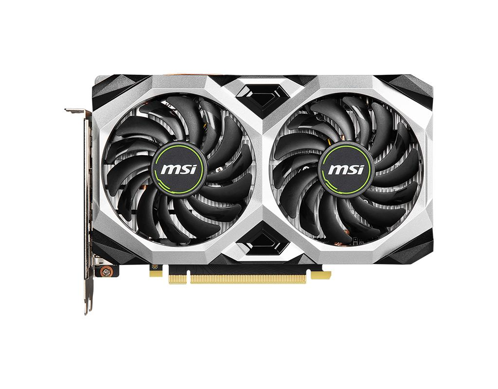

„NVidia GeForce GT 610“ grafikos plokštė: grafikos greitintuvo savybės ir niša - Įranga 2020
2020.10.29 12:41

Kompiuterinė teismo ekspertizė Kompiuteriniai žaidimai Duomenų atkūrimas Duomenų bazė Elektroninis ir nuotolinis mokymasis
Įranga
„NVidia GeForce GT 610“ grafikos plokštė: grafikos greitintuvo savybės ir niša
Spalio Mėn 2020 Kuris rinkos segmentas atitinka šį greitintuvo tikslą? GPU charakteristikos RAM Konkurencingi produktai Kainų grafikos greitintuvas: vartotojo nuomonė RezultataiPradinio lygio vaizdo plokštė su geromis techninėmis specifikacijomis ir labai demokratiškomis sąnaudomis yra NVidia GeForce GT 610. Šio gaminio, jo parametrų ir galimybių ypatumai bus išsamiau nagrinėjami.
Kuris rinkos segmentas atitinka šį greitintuvo tikslą?
Grafinių spartintuvų su GT prefiksu serija yra pats priimtiniausias NVidia grafikos plokštės procesoriaus sprendimų produktas. Tokiu atveju techniniai adapterio parametrai išnyks į foną ir jau yra mažiau svarbūs perkant greitintuvą. Šiai grupei priklauso „NVidia GeForce GT 610“ vaizdo plokštė, kurios savybės tik patvirtina: pasenusios atminties, minimalių vaizdo procesorių dažnių ir ribotą perjungimo prievadų rinkinį.
Šio akceleratoriaus niša yra biuro kompiuteriai, taip pat pradinio lygio skaičiavimo sistemos. Atsižvelgiant į tai, kad dauguma perdirbėjų turi biudžetą, kuriame yra integruoti grafiniai procesoriai, GT serijos produktų poreikis yra minimalus. Patartina juos papildomai įsigyti tais atvejais, kai integruotas kompiuterio vaizdo posistemis neturi pakankamai našumo problemai išspręsti arba yra klaidingas. Tokiais atvejais „NVidia“ gamina „GT 610“ vaizdo procesorių.
GPU charakteristikos
Žinoma, „NVidia GeForce GT 610“ negali pasigirti išskirtinėmis techninėmis specifikacijomis. CUDA šerdies skaičius šiuo atveju yra tik 48. Grafikos lusto dažnis yra 810 MHz, o atmintis - 1620 MHz. Programinės įrangos lygmeniu šis adapteris palaiko „DirectX“ versiją 11 ir „OpenGL 4.2“. Šio vaizdo akceleratoriaus „PCI-E“ sąsaja atitinka 2.0 specifikacijas. Didžiausia palaikoma HDMI ir DVI išvesties raiška yra 2560x1600, o VGA - 2048x1536. Šiuo atveju vaizdo prievadų skaičius yra trys: HDMI, VGA ir DVI. Maksimali leistina vaizdo procesoriaus temperatūra yra 102 laipsniai. Pačiame akseleratoriuje sunaudojama ne daugiau kaip 30 vatų, o kompiuterinė sistema su tokiu akceleratoriumi turi būti aprūpinta bent 300 vatų galia.
RAM
Kaip minėta anksčiau, pasenusio tipo RAM naudojamas NVidia GeForce GT 610. Šio akseleratoriaus charakteristikos rodo palaikymą DDR3. Šiuo metu grafikos adapterių rinkai skirta RAM yra nesvarbi. Atminties magistralės plotis šiuo atveju yra tik 64 bitai, o jo našumas yra 1, 8 Gb / s. Tokių grafikos greitintuvų RAM gali būti lygus 1 arba 2 GB.
Konkurencingi produktai
Integruoti grafiniai greitintuvai yra produktai, su kuriais konkuruoja „NVidia GeForce GT 610“ grafikos plokštė. Reikėtų nepamiršti, kad adapterio greitis nesiskiria nuo analogų. Todėl daugeliu atvejų nėra daug dalyko pirkti tokią atskirą grafinę kortelę.
Pagrįstas jo įsigijimas gali būti tik dviem atvejais. Vienas iš jų yra integruoto vaizdo posistemio greičio trūkumas problemai išspręsti. Tačiau reikėtų nepamiršti, kad šiuo atveju geriau padidinti biudžetą ir įsigyti brangesnę vaizdo plokštę su patobulinta technine specifikacija ir dideliu našumo skirtumu. „GT 610“ įsigijimas gali būti pateisinamas tik tada, kai būtina nedelsiant atkurti kompiuterio veikimą dėl esamo grafinio gaminio gedimo ar gedimo, su minimaliomis sąnaudomis. Tuo pačiu metu nėra jokių specialių reikalavimų skaičiavimo sistemos greičiui.
Kainų grafikos greitintuvas: vartotojo nuomonė
Šiuo metu NVidia GeForce GT 610 gali būti įsigyta už 3000 rublių. Produktas visiškai atitinka tokias išlaidas. Renkant biurą ar biudžetą, PC kaina išryškėja. Todėl integruoto grafikos posistemio naudojimas šiuo atveju yra labiau pagrįstas nei papildomos atskiros pradinio lygio vaizdo plokštės įdiegimas. Todėl vienintelis atvejis, kai „GT 610“ naudojimas yra pagrįstas, yra kompiuterio remontas su minimaliomis sąnaudomis, jei integruotas vaizdo spartintuvas yra sugedęs. Štai ką dauguma naudotojų atsiliepimų nurodo daugelyje interneto temų, skirtų šiai temai.
Rezultatai
Žinoma, „NVidia GeForce GT 610“ žemos klasės grafikos plokštė nuo pat pradžių negalėjo tapti masiniu produktu, jo našumas yra labai kuklus, o jo veikimo lygis yra minimalus. Jos naudojimas kaip biudžeto ir biurų skaičiavimo sistemų dalis yra pagrįstas. Ir netgi tada, kai sulaužė esama vaizdo plokštė, ir sistemos vienetas turi būti greitai ir minimaliai atkurtas. Kitais atvejais patartina atkreipti dėmesį į brangius grafikos sprendimus, kurių greitis yra didesnis, arba atsisakyti naudoti atskirą vaizdo posistemį ir naudoti integruotą greitintuvą.
Redaktoriaus Pasirinkimas
Įranga
ZXHN H118N maršrutizatorius: charakteristikos, konfigūracija
Programavimas
C visų C įtraukimo paaiškinimų sąrašas
Operacines sistemas
Kokius „Windows 7“ naujinimus negalima įdiegti? Patarimai
Populiarios Temos
„Lenovo B570e“ nešiojamas kompiuteris (Lenovo B570e): aprašymas, specifikacijos, apžvalgos
„Numatomo vedlio“ įvertinimo programa. „Įvertinimo vedlys“: instrukcijos, apžvalgos
Rekomenduojama
FPS žaidime - kas tai yra? Kaip jį kelti?
„Hitman“ sutartys: pasivaikščiojimas
Populiarios Temos
Programavimas Duomenų atkūrimas Programinė įranga Įranga Intranetas Tinklą Nešiojamieji kompiuteriai Failų tipai Kompiuteriniai žaidimaiPopuliarios Kategorijos
Kaip sfotkat ekraną nešiojamuoju kompiuteriu įvairiais būdais?
Kaip pašalinti „Facebook“ iš savo telefono: praktiniai patarimai ir gudrybės
© Copyright. lit.kagutech.com: Spalio Mėn 2020
- Kas yra integruota grafikos plokštė?
- Skirtumas tarp atskiros ir integruotos grafikos kortelės ...
- grafikos plokštės
- Vaizdo Plokštės GeForce, Radeon. Vaizdo Plokste Internetu ...
- NAUJOS GRAFIKOS PLOKŠTĖS ĮDIEGIMAS! - ŽAIDIMAI(2020)
- Grafikos plokštę "HD 7970: techninė harakterisitki ir ...
- Vga grafikos plokštės aprašymas - Įranga - 2020
- 10 geriausių kompiuterio grafikos plokštės 2018 m - Žmonių ...
- Kaip sužinoti, kokią grafikos plokštę turiu? („Windows 10 ...
- Grafikos kortelių reitingas - palyginimų sąrašas 2020
- Kas yra integruota grafikos plokštė?
Papildomi būdai sužinoti, kuri grafikos plokštė naudoja „Windows“ Be jau aprašytų metodų, „Windows 10“, „8“ ir „Windows 7“ yra papildomi sistemos įrankiai, leidžiantys gauti informaciją apie vaizdo plokštės modelį ir gamintoją, kuris kai kuriais atvejais gali būti naudingas (pvz., Jei administratoriui neleidžiama ...
- Skirtumas tarp atskiros ir integruotos grafikos kortelės ...
Pavyzdžiui, integruota "Intel" grafikos plokštė sunaudoja ne daugiau kaip 15 vatų. Todėl temperatūros režimas yra švelnesnis - galite sumažinti triukšmingų ventiliatorių skaičių sistemos vienete. Trečia, linijų skaičius ir ilgis mažėjaSistemos autobusas naudojamas bendrauti su kortele, todėl galite gauti aiškesnį vaizdą ...
- grafikos plokštės
Žinant, kokią grafinę plokštę turite kompiuteryje su „Windows 10“, labai svarbu, nes per šią informaciją galite atsisiųsti, įdiegti ir atnaujinti reikalingus tvarkykles. Grafinė kortelė, vaizdo plokštė arba vaizdo plokštė yra pagrindinė ir esminė kompiuterio sudedamoji dalis, nes ji yra atsakinga už visų kompiuterio ir visų jį valdančių programų grafinių (ty ...
- Vaizdo Plokštės GeForce, Radeon. Vaizdo Plokste Internetu ...
Norint pakeisti grafikos plokštę, pirmiausia reikės atidaryti kompiuterio dėžę, išimti senąją ir įdėti naują plokštę. Tačiau prieš įsigyjant naują techninę įrangą labai svarbu žinoti, ar Tavo kompiuteryje yra naudojama „PCI Express“ grafikos plokštė, ar senesnė AGP.
- NAUJOS GRAFIKOS PLOKŠTĖS ĮDIEGIMAS! - ŽAIDIMAI(2020)
Kokia žaidimų vaizdo plokštė? Gera vaizdo plokštė 616 peržiūros Patugali atsakė į klausimą Birželio 24 2020 Pramogos ir laisvas laikas žaisti žaidimų kortelė Grafika kortelė grafikos plokštės kompiuterio surinkimas
- Grafikos plokštę "HD 7970: techninė harakterisitki ir ...
PC grafikos kortelės; Grafikos kortelių reitingas. Grafikas, kuriame lyginamos geriausių kompiuterio grafikos plokščių charakteristikos. Naujausia „Gforce“, „RX Radeon GPU“ greitis, palyginti su reitingu. Sužinokite, kuri darbalaukio vaizdo plokštė yra greičiausia. 2020-01-31
- Vga grafikos plokštės aprašymas - Įranga - 2020
HD vaizdo plokštė 7970 GHz Edition "buvo parduoti forma distiliuoto nuo: grafikos branduolys veikia esant 1050 MHz dažniu, o vaizdo atmintis 1500 MHz (6000 MHz). Verta pažymėti, kad gamintojas yra įvesta daugiau jokių pokyčių: tikimasi padidinti pajėgumus daugiau nei 384 bitai, ir padidinti atminties talpą iki 6 GB atsitiko.
- 10 geriausių kompiuterio grafikos plokštės 2018 m - Žmonių ...
Specialiosios ir integruotos grafikos kortelės yra dviejų tipų grafikos plokštės. Pagrindinis skirtumas tarp dviejų yra tas, kad integruota grafikos plokštė yra įmontuota į kompiuterį. Kadangi speciali grafinė plokštė yra išorinis priedas, kuris turi būti prijungtas prie pagrindinės plokštės.
- Kaip sužinoti, kokią grafikos plokštę turiu? („Windows 10 ...
Gigabyte GeForce GTX 1050 2GB grafinė plokštė 4, 4 žvaigždutės, 907 atsiliepimai "Tai buvo mano pirmoji grafikos plokštė kada nors, ir nuoširdžiai, kad žaidimų, kuriuos galiu žaisti tokioje spalvingoje kokybėje, skaičius mane visiškai gąsdina.
- Grafikos kortelių reitingas - palyginimų sąrašas 2020
Pradinio lygio vaizdo plokštė su geromis techninėmis specifikacijomis ir labai demokratiškomis sąnaudomis yra NVidia GeForce GT 610. Šio gaminio, jo parametrų ir galimybių ypatumai bus išsamiau nagrinėjami.
Papildomi būdai sužinoti, kuri grafikos plokštė naudoja „Windows“ Be jau aprašytų metodų, „Windows 10“, „8“ ir „Windows 7“ yra papildomi sistemos įrankiai, leidžiantys gauti informaciją apie vaizdo plokštės modelį ir gamintoją, kuris kai kuriais atvejais gali būti naudingas (pvz., Jei administratoriui neleidžiama ...
Pavyzdžiui, integruota "Intel" grafikos plokštė sunaudoja ne daugiau kaip 15 vatų. Todėl temperatūros režimas yra švelnesnis - galite sumažinti triukšmingų ventiliatorių skaičių sistemos vienete. Trečia, linijų skaičius ir ilgis mažėjaSistemos autobusas naudojamas bendrauti su kortele, todėl galite gauti aiškesnį vaizdą ...
Žinant, kokią grafinę plokštę turite kompiuteryje su „Windows 10“, labai svarbu, nes per šią informaciją galite atsisiųsti, įdiegti ir atnaujinti reikalingus tvarkykles. Grafinė kortelė, vaizdo plokštė arba vaizdo plokštė yra pagrindinė ir esminė kompiuterio sudedamoji dalis, nes ji yra atsakinga už visų kompiuterio ir visų jį valdančių programų grafinių (ty ...
Norint pakeisti grafikos plokštę, pirmiausia reikės atidaryti kompiuterio dėžę, išimti senąją ir įdėti naują plokštę. Tačiau prieš įsigyjant naują techninę įrangą labai svarbu žinoti, ar Tavo kompiuteryje yra naudojama „PCI Express“ grafikos plokštė, ar senesnė AGP.
Kokia žaidimų vaizdo plokštė? Gera vaizdo plokštė 616 peržiūros Patugali atsakė į klausimą Birželio 24 2020 Pramogos ir laisvas laikas žaisti žaidimų kortelė Grafika kortelė grafikos plokštės kompiuterio surinkimas
PC grafikos kortelės; Grafikos kortelių reitingas. Grafikas, kuriame lyginamos geriausių kompiuterio grafikos plokščių charakteristikos. Naujausia „Gforce“, „RX Radeon GPU“ greitis, palyginti su reitingu. Sužinokite, kuri darbalaukio vaizdo plokštė yra greičiausia. 2020-01-31
HD vaizdo plokštė 7970 GHz Edition "buvo parduoti forma distiliuoto nuo: grafikos branduolys veikia esant 1050 MHz dažniu, o vaizdo atmintis 1500 MHz (6000 MHz). Verta pažymėti, kad gamintojas yra įvesta daugiau jokių pokyčių: tikimasi padidinti pajėgumus daugiau nei 384 bitai, ir padidinti atminties talpą iki 6 GB atsitiko.
Specialiosios ir integruotos grafikos kortelės yra dviejų tipų grafikos plokštės. Pagrindinis skirtumas tarp dviejų yra tas, kad integruota grafikos plokštė yra įmontuota į kompiuterį. Kadangi speciali grafinė plokštė yra išorinis priedas, kuris turi būti prijungtas prie pagrindinės plokštės.
Gigabyte GeForce GTX 1050 2GB grafinė plokštė 4, 4 žvaigždutės, 907 atsiliepimai "Tai buvo mano pirmoji grafikos plokštė kada nors, ir nuoširdžiai, kad žaidimų, kuriuos galiu žaisti tokioje spalvingoje kokybėje, skaičius mane visiškai gąsdina.
Pradinio lygio vaizdo plokštė su geromis techninėmis specifikacijomis ir labai demokratiškomis sąnaudomis yra NVidia GeForce GT 610. Šio gaminio, jo parametrų ir galimybių ypatumai bus išsamiau nagrinėjami.
